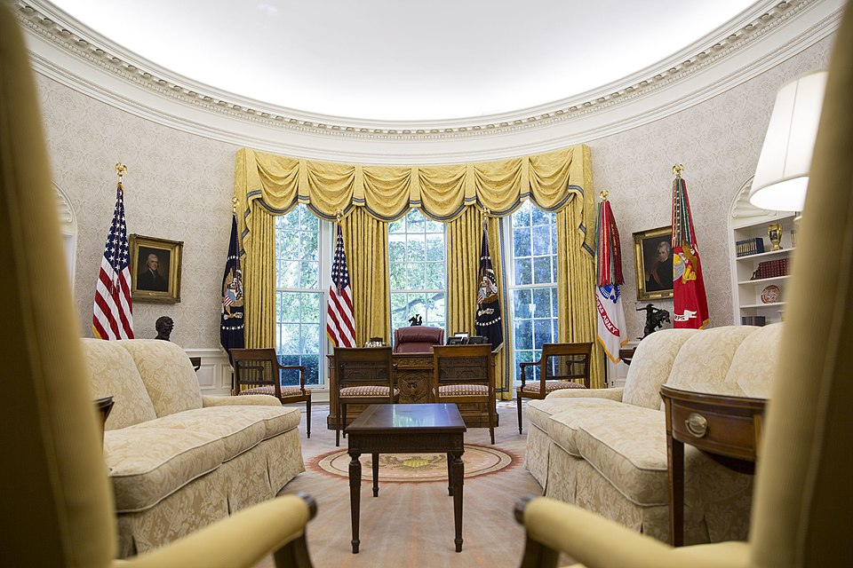
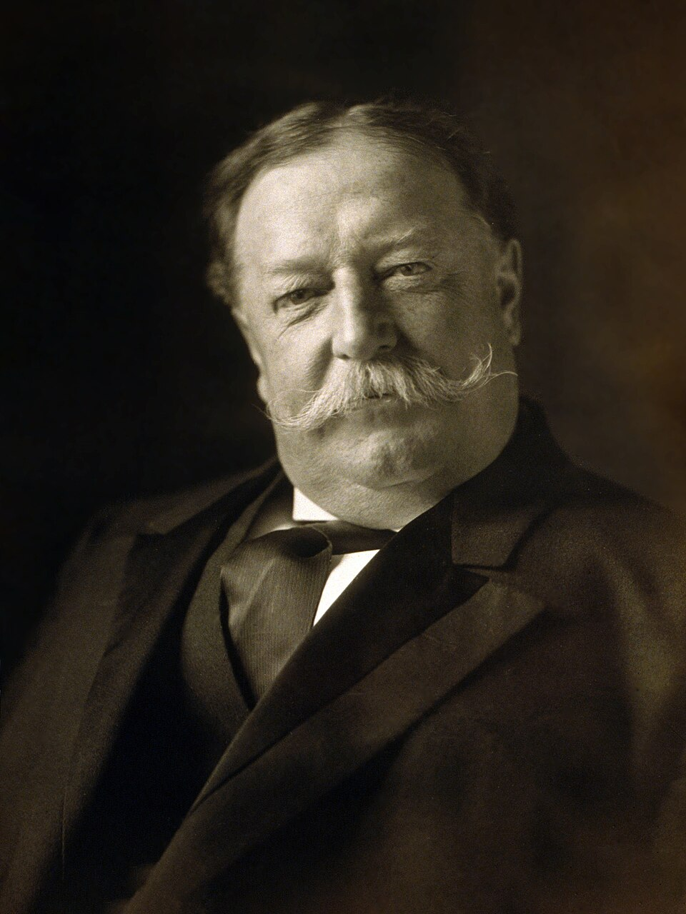
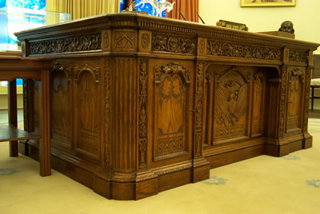
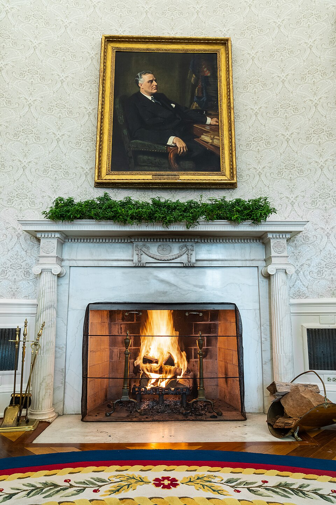
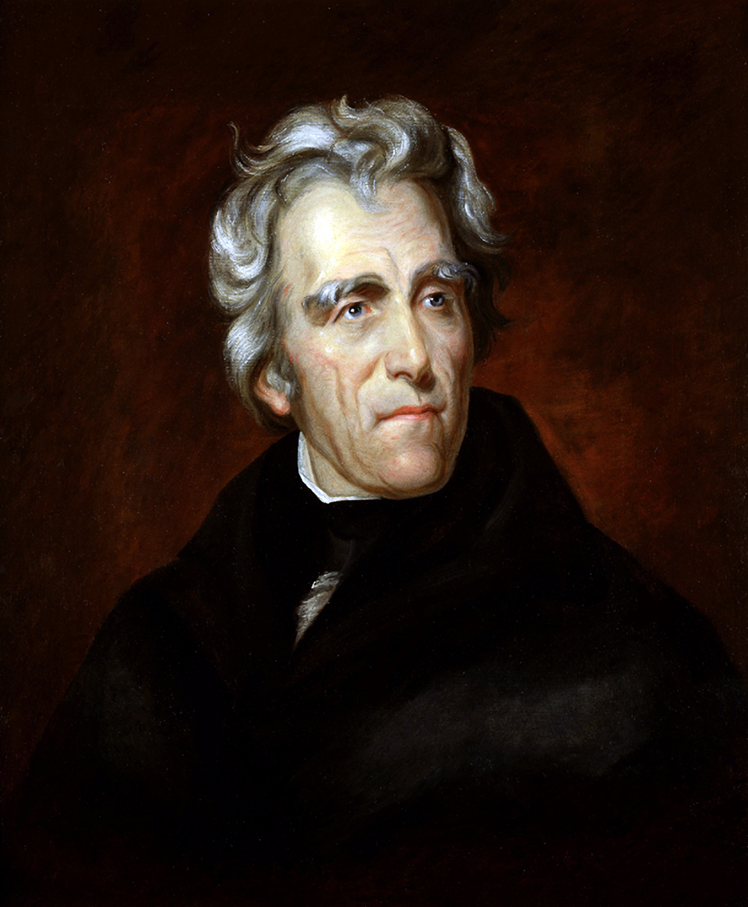
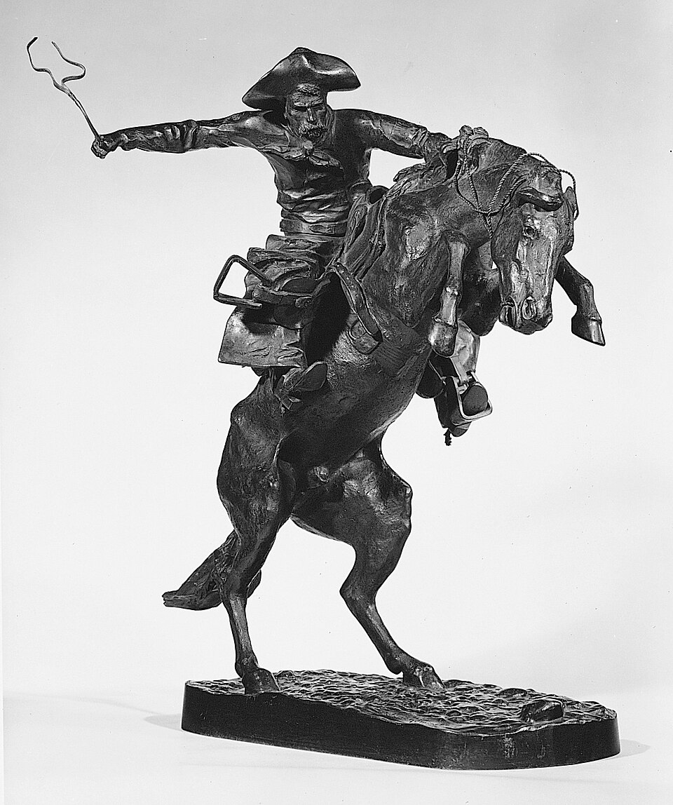
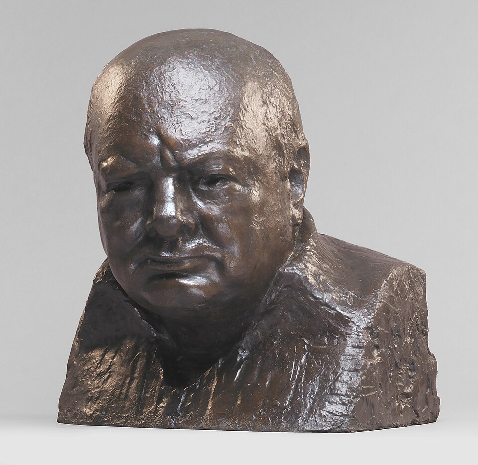

עמוד ראשי – מבוא
חדר הסגלגל הוא משרדו הרשמי של נשיא ארצות הברית באגף המערבי של הבית הלבן. החדר משמש לפגישות מדיניות, חתימה על חוקים, נאומים מצולמים, קבלת מנהיגים וצילומים רשמיים.

קרדיט: חדר הסגלגל בבית הלבן, צילום רשמי של ממשלת ארצות הברית / הבית הלבן, נחלת הכלל.
האנשים המרכזיים מאחורי הרעיון

ג׳ורג׳ וושינגטון
שנות חיים: 1732–1799
וושינגטון לא עבד בחדר הסגלגל המודרני, אך בתקופתו התבססה המסורת של חדרים אליפטיים רשמיים בבית הנשיא.
קרדיט: דיוקן ג׳ורג׳ וושינגטון, מאת Gilbert Stuart, 1796, נחלת הכלל.

ויליאם הווארד טאפט
שנות חיים: 1857–1930
טאפט היה הנשיא שבתקופתו, בשנת 1909, נבנה חדר הסגלגל הראשון באגף המערבי.
קרדיט: דיוקן ויליאם הווארד טאפט, נחלת הכלל.
מידות מדויקות של החדר, השולחן והחלונות
מידות חדר הסגלגל
- ציר ארוך: 35 רגל ו־10 אינץ׳ / 10.9 מטר
- ציר קצר: 29 רגל / 8.8 מטר
- גובה תקרה: 18 רגל ו־6 אינץ׳ / 5.6 מטר
- נקודת תחילת קימור התקרה: 16 רגל ו־7 אינץ׳ / 5.0 מטר
מידות שולחן Resolute
- גובה: כ־32.5 אינץ׳ / כ־83 ס״מ
- רוחב: 72 אינץ׳ / כ־183 ס״מ
- עומק: 48 אינץ׳ / כ־122 ס״מ
- משקל: כ־1,300 ליברות / כ־590 ק״ג
החלונות
בחדר הסגלגל יש שלושה חלונות גדולים הפונים למדשאה הדרומית. לא מצאתי מקור רשמי אמין שמפרסם את מידות החלונות המדויקות.
היסטוריה מורחבת של פרטי הריהוט

שולחן Resolute
שולחן Resolute נבנה בשנת 1880 מעץ הספינה הבריטית HMS Resolute.
קרדיט: שולחן Resolute, צילום רשמי של הבית הלבן / ממשלת ארצות הברית, נחלת הכלל.
ספות, כורסאות ושולחנות צד
הריהוט באזור הישיבה משתנה בין נשיאים ומשקף את סגנון הממשל.
קרדיט: חדר הסגלגל, צילום רשמי של הבית הלבן / ממשלת ארצות הברית, נחלת הכלל.
היסטוריה מורחבת של הקישוטים המרכזיים
השטיח הנשיאותי
השטיח בחדר הסגלגל הוא אחד הביטויים האישיים ביותר של הנשיא בחדר.

האח והקיר הצפוני
האח ממוקם מול אזור שולחן הנשיא ומהווה מוקד חזותי חשוב.

דיוקן אנדרו ג׳קסון
דיוקנאות של נשיאים קודמים יוצרים קשר חזותי למסורת הנשיאותית.

The Broncho Buster
הפסל The Broncho Buster מזוהה עם דימוי המערב האמריקאי.

פסל ראש של וינסטון צ׳רצ׳יל
פסל ראש של צ׳רצ׳יל מסמל את הקשר ההיסטורי בין ארצות הברית לבריטניה.
ציר זמן אינטראקטיבי – אירועים מכוננים בחדר הסגלגל
1909 – הקמת חדר הסגלגל הראשון
בתקופת הנשיא ויליאם הווארד טאפט נבנה חדר הסגלגל הראשון באגף המערבי.
אודות האתר

אתר זה נבנה כפרויקט ידע חזותי בעברית על חדר הסגלגל.
מטרת האתר היא להציג מידע היסטורי בצורה נגישה, יפה וברורה.
מקורות וקרדיטים
- White House Historical Association – Oval Office dimensions.
- Britannica – Resolute Desk dimensions and description.
- Wikimedia Commons – historical public-domain images.
- The Metropolitan Museum of Art – Open Access / CC0 image of The Broncho Buster.
- National Archives – public-domain government materials.
- Official White House photographs – U.S. Government / Public Domain where applicable.
קרדיטים לתמונות
- George Washington portrait, Gilbert Stuart, Public Domain.
- William Howard Taft portrait, Public Domain.
- Oval Office official photographs, U.S. Government / White House, Public Domain.
- Resolute Desk, official White House / U.S. Government photograph, Public Domain.
- Andrew Jackson portrait, Thomas Sully, Public Domain.
- The Broncho Buster, Frederic Remington, 1895, The Metropolitan Museum of Art, CC0.
- Winston Churchill bust, Jacob Epstein, Public Domain / Wikimedia Commons.
- Profile image: ram-profile.jpg, supplied by the site creator.